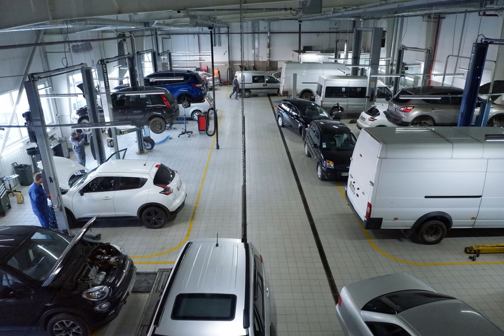

Комп'ютерна діагностика
Повна перевірка електронних систем автомобіля, зчитування та розшифровка кодів помилок. Використовуємо професійні сканери Launch та Autel.

Привіт! Ми — команда автосервісу «МоторЛайн», яка спеціалізується на комп'ютерній діагностиці, ремонті двигунів та ходової частини автомобілів. На цьому сайті ми ділимося інформацією про наші послуги, досвід роботи та допомагаємо клієнтам підтримувати автівки в ідеальному стані.
Повна перевірка електронних систем автомобіля, зчитування та розшифровка кодів помилок. Використовуємо професійні сканери Launch та Autel.
Заміна амортизаторів, пружин, важелів та сайлентблоків. Працюємо на підйомниках з використанням спецінструменту та оригінальних запчастин.
Регламентна заміна моторної оливи, фільтрів та технічних рідин. Використовуємо тільки сертифіковані витратні матеріали від перевірених брендів.
Відновлення блоків управління, ремонт проводки та усунення несправностей в електронних системах комфорту автомобіля.
Сезонна заміна шин, професійне балансування коліс та ремонт проколів на сучасному обладнанні.
Комплексна перевірка всіх систем авто перед проходженням державного технічного огляду та усунення виявлених недоліків.
Залиште заявку на ремонт — і ми зв'яжемося з вами найближчим часом!